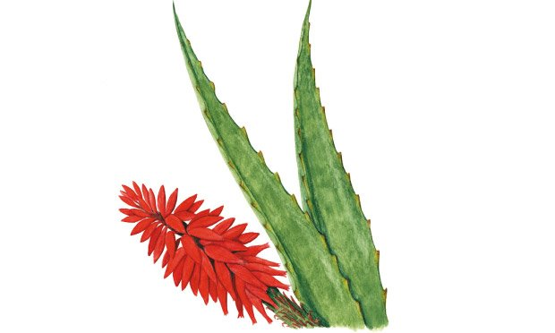
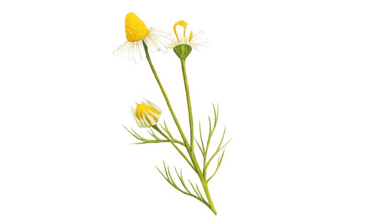
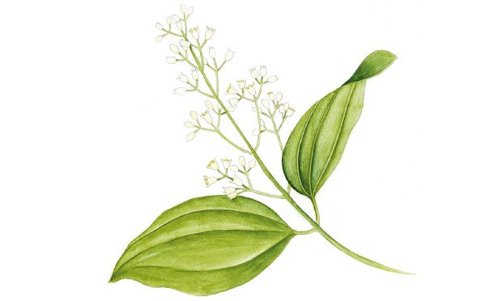

|  |
 |
 |
| A babosa, ou aloés, é uma planta de origem africana, amplamente conhecida na cultura popular mundial e brasileira, especialmente por suas propriedades medicinais no tratamento de queimaduras e doenças da pele. |
Ela veio bem de longe, da Europa Central, diretamente para os ares tropicais do Brasil juntamente com a imigração europeia no final do século XIX. |
Nativa do Sri Lanka, no sul da Ásia, a canela é utilizada desde a Antiguidade, mas se espalhou pelo mundo através das Grandes Navegações. |
| A babosa é uma planta fácil de plantar, já que não exige grandes cuidados com a preparação do solo. Você pode optar por plantá-la em um canteiro ou em um vaso, a planta se adapta muito bem em qualquer um dos dois. |
O ideal é cultivar com luz solar direta, mas você também pode plantar camomila em ambientes de sombra parcial, desde que haja uma boa luminosidade. |
Em plantios tecnicamente formados, recomenda-se os espaçamentos 2 x 2 metros e 2 x 1,5 metro. |
| O consumo do suco de babosa em excesso pode causar distúrbios gastrointestinais, como dor abdominal, náuseas, vômitos e diarreia. O seu uso prolongado poderá causar prisão de ventre porque o intestino pode ficar dependente da ação laxante deste suco. |
A orientação é consumir entre três e doze gramas da planta da camomila seca, sendo que para preparar uma xícara de 200 ml de chá de camomila pode-se utilizar uma colher de sobremesa da planta seca. |
Como consumir a canela. Não há diferenças nutricionais entre a ingestão da canela em pó ou em pau. Esta especiaria pode ser consumida polvilhada sobre frutas, legumes e carnes e também pode ser incluída em chás e sucos. |
| polissacarídeos, minerais, enzimas |
Ácidos orgânicos, ácido salicílico, apigenina, borneol, cânfora, colina, cumarina, flavonóides, herniarina, saponina, mucilagem, pró-camazuleno, terpenosazuleno e umbeliferona. |
cinamaldeído |